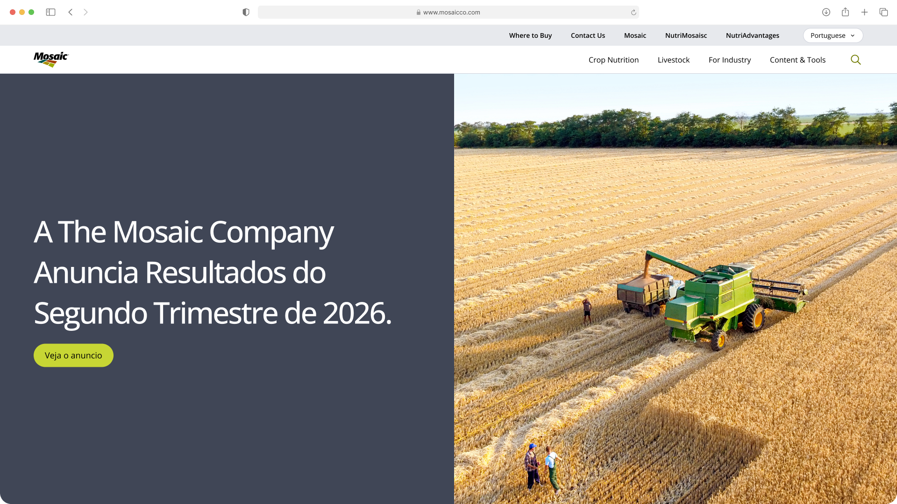

Web Redesign —
Discovery & Design Direction
Mosaic's web presence had grown into a sprawling, inconsistent collection of sites — hurting the brand more than helping it. Visitors rarely made it past the homepage, most traffic arrived cold through Google search rather than site navigation, and articles averaged just 8 seconds of read time. The information architecture buried content too deep to find, undermining the premium feel a Fortune 500 company needs.
We audited all existing properties, mapped personas and user journeys across key audience segments, then consolidated dozens of regional sites into two core platforms — a corporate site and a South America marketing site.
To ensure long-term scalability, I developed a tokenized design system — codifying the brand into reusable components and design decisions, creating a single source of truth for future digital experiences.
The consolidation brings Mosaic's 10+ fragmented properties under two focused platforms with a unified visual system, tokenized design language, and restructured information architecture — built to reflect the scale and credibility of a Fortune 500. Design fully approved by leadership, build-ready assets on the shelf.
